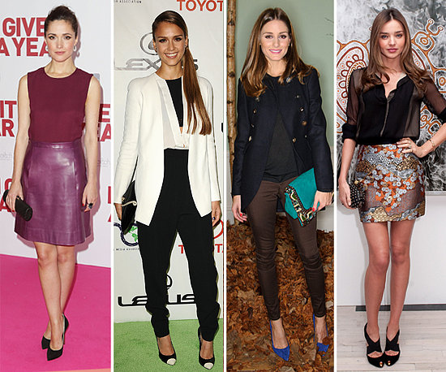

Fall Night Out
If your plans involve hitting the latest hot spot and you value ease and comfort, a printed shift dress and smokin over-the-knee boots are effortless to put together but straight-up attention-stealing.
Don’t be afraid to mix eye-catching textures and colors for a cocktail event. We’re totally inspired by a multicolor sequined dress paired with mirrored silver heels. Trick: Skip the metallic on the dress to avoid any matchy-matchy-ness and keep the shine to a sleek minimum.
With countless projects, so dressing to go from work to play is many women's specialty. The essential: a tweed minidress, with an interesting element, be it a bustier top or sophisticated embroidery. Layer on a blazer or cardigan by day, then strip off it off for night. Don’t forget to stash a pair of strappy metallic heels under your desk for the post-5 P.M. switch too.
Leather will be everywhere this fall! Take a sexy, take-no-prisoners long-sleeve number by for example. And with a pair of dominatrix platform pumps no less. If you’re looking for the ultimate date-night outfit to assure all eyes are on you, this one is it.
Seriously, the no white after Labor Day rule has become obsolete. Winter whites are huge for fall too, so try a long-sleeve jacquard top and blousy shorts. Soft gray pumps bring the look into fall without being as jarring as black. You’ll stand out from the crowd at those September rooftop parties and chic wine-tasting nights you have planned.